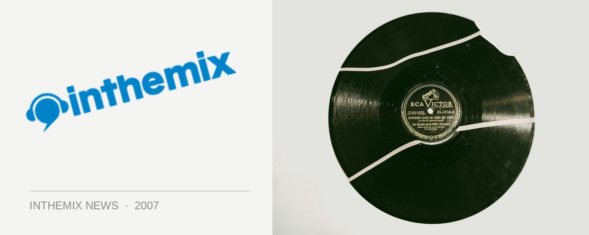

Datarock swing back to Australia
Big favourites to our shores, Norwegian indie/electro act Datarock will be returning to Australia in September for their third tour in less than two years. Well remembered for their quirky hit Computer Camp Love, they’ve been hitting the touring circuit hard ever since they formed a few short years ago and have so far played over 300 shows in 16 different countries.
To coincide with the tour the band will also dropping a limited 2CD edition their debut album Datarock Datarock complete with a biunch of extra goodies including their 5-track EP See What I Care.
Tickets go on sale Wednesday 25th July and if you need to refresh your memories, take a look at the quirky clip for their tune Fa Fa Fa below…
Wednesday September 5th The Zoo, Brisbane
Thursday September 6th Metro, Sydney
Friday September 7th The Hi Fi, Melbourne